Tout savoir pour bien utiliser SIGR
Suivez ce guide étape par étape pour prendre en main la plateforme : connexion, navigation, gestion des agents, formalisation et évaluation des risques, mitigation et circuit de validation de la cartographie. Chaque section s'appuie sur de vraies captures d'écran de l'application, pour que vous vous y retrouviez rapidement.
Se connecter à la plateforme
L'accès à SIGR se fait avec un matricule et un mot de passe fournis par votre administrateur. Aucune auto-inscription n'est possible : seul un agent ADMIN ou SUPER_ADMIN peut créer un compte.
- Ouvrez la page de connexion de SIGR.
- Saisissez votre matricule (ex.
AGT-003) dans le premier champ. - Saisissez votre mot de passe dans le second champ.
- Cliquez sur « Se connecter ». Vous êtes redirigé vers le tableau de bord.
Découvrir l'interface
Une fois connecté, vous arrivez sur le tableau de bord. Trois zones structurent toute la plateforme : le menu latéral à gauche, la barre supérieure, et la zone de contenu principale.
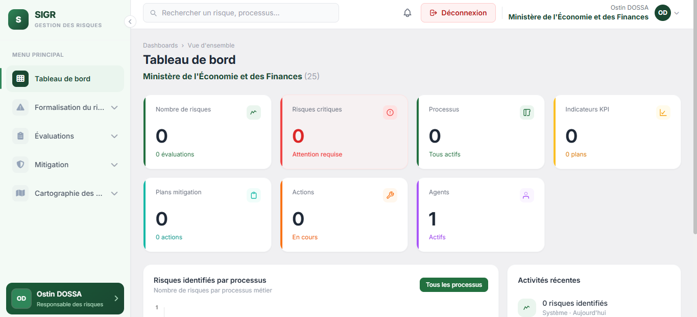
Menu latéral (gauche)
Regroupe les modules par rubrique. Cliquez sur une rubrique pour déplier ses sous-menus. Le menu affiché dépend de votre rôle et profil.
Barre supérieure
Guide d'utilisation, cloche de notifications (avec compteur des non-lues), déconnexion, ministère de rattachement et accès à votre profil (avatar, en haut à droite).
Zone de contenu
Listes, formulaires et détails s'affichent ici. La plupart des listes proposent recherche, filtres et pagination.
Les indicateurs clés du tableau de bord
La partie centrale du tableau de bord affiche des compteurs chiffrés qui donnent un aperçu rapide de la situation du ministère :
Nombre de risques
Total des risques enregistrés et nombre d'évaluations réalisées.
Risques critiques
Nombre de risques nécessitant une attention particulière.
Processus métiers
Nombre de processus actifs suivis par l'application.
Indicateurs KPI
Nombre d'indicateurs de performance et de plans associés.
Plans de mitigation
Nombre de plans en place et d'actions associées.
Actions
Nombre d'actions en cours de traitement.
Agents
Nombre d'agents actifs sur la plateforme.
En bas de page, un graphique présente les risques identifiés par processus métier, et l'encart « Activités récentes » liste les dernières actions effectuées sur le système (risques identifiés, évaluations complétées…).
Déplier un sous-menu
Cliquez sur une rubrique du menu (ex. « Configuration ») pour afficher ses pages.
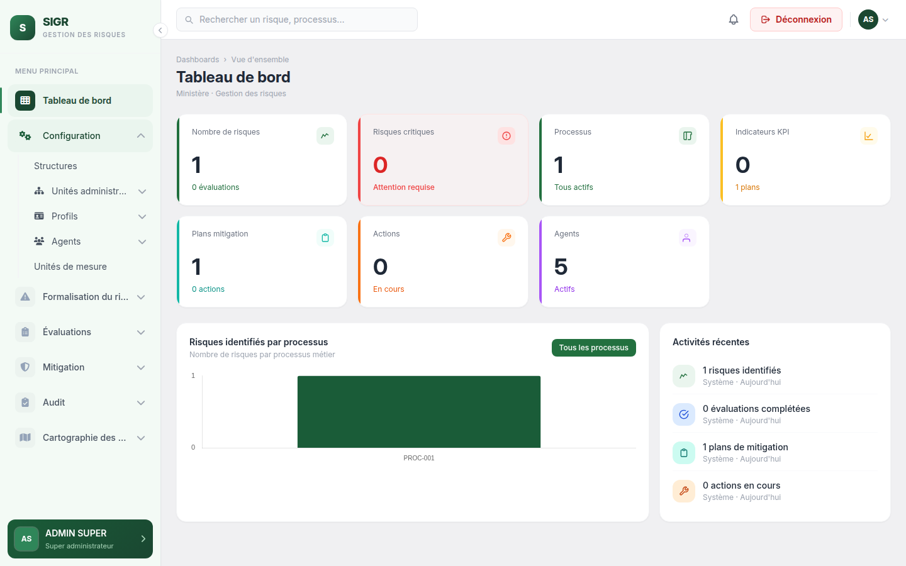
Le guide, les notifications et votre profil
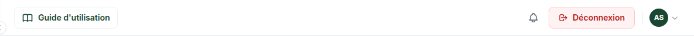
- L'icône livre ouvert ouvre ce guide dans un nouvel onglet, à tout moment.
- La cloche affiche un badge avec le nombre de notifications non lues et vous emmène vers le centre de notifications. Le badge se met à jour automatiquement, sans recharger la page.
- Votre avatar (initiales, en haut à droite) ouvre la page « Mon profil ».
L'assistant SIGR (chatbot)
Une bulle de discussion 💬 reste accessible en bas à droite sur toutes les pages. Elle répond aux questions courantes sur l'utilisation de la plateforme (connexion, création d'un risque, circuit de validation, rôles…) en s'appuyant directement sur le contenu de ce guide — aucune connexion internet ni clé externe n'est nécessaire.
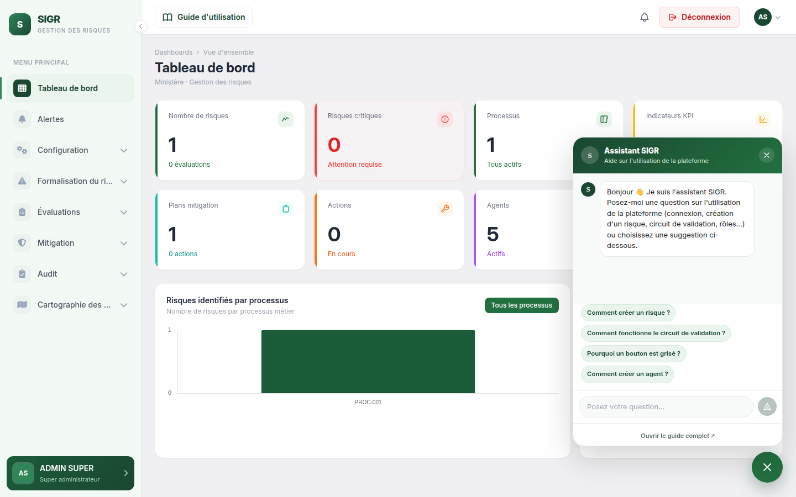
- Cliquez sur la bulle verte pour ouvrir la conversation.
- Choisissez une suggestion ou tapez votre question librement.
- Chaque réponse propose un lien « En savoir plus dans le guide » vers la section correspondante.
Comprendre les rôles & profils
SIGR combine deux notions complémentaires : le rôle technique (ce que le compte est autorisé à administrer) et le profil métier (ce que l'agent fait dans le circuit de gestion des risques).
| Rôle technique | Portée |
|---|---|
| SUPER_ADMIN | Accès total, tous ministères confondus. Seul rôle pouvant créer un autre SUPER_ADMIN. |
| ADMIN | Administration complète, limitée à son propre ministère (agents, structures, unités). |
| AGENT | Compte opérationnel rattaché à un profil métier obligatoire (voir ci-dessous). |
RESPONSABLE_RISQUES
Formalise les risques et transmet la cartographie au Pilote.
PILOTE
Valide, diffère ou rejette au niveau du processus.
CCI
Consolide avec le CODIR avant transmission au CMMR.
CMMR
Valide la cartographie du ministère — étape finale du circuit.
RESPONSABLE_ACTION
Gère les plans de mitigation et les actions correctives.
AUDITEUR
Accès en lecture seule + gestion du plan d'audit.
Gérer les agents
Menu Configuration → Agents. Créez, modifiez, activez/désactivez ou supprimez les comptes. Un SUPER_ADMIN voit tous les ministères ; un ADMIN ne voit que le sien.
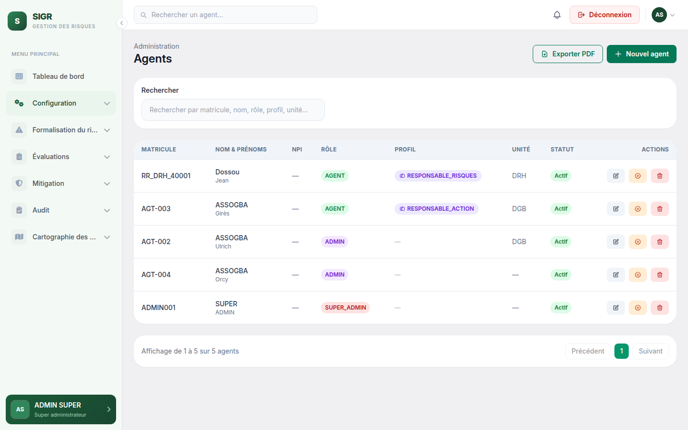
Créer un nouvel agent
- Cliquez sur « Nouvel agent » en haut de la liste.
- Renseignez l'état civil, puis choisissez le ministère et l'unité administrative de rattachement.
- Si le rôle choisi est AGENT, sélectionnez obligatoirement un profil métier.
- Définissez le matricule et le mot de passe initial, puis enregistrez.
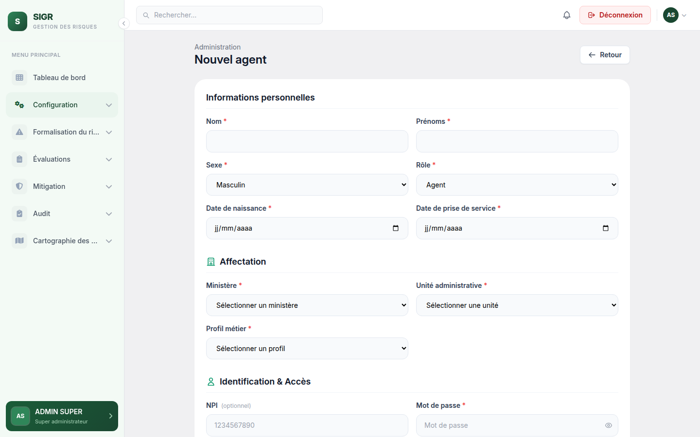
Modifier, désactiver ou supprimer un agent
Dans la colonne « Actions », trois icônes sont disponibles pour chaque agent :
- L'icône crayon permet de modifier les informations de l'agent.
- L'icône orange (bascule vers vert une fois le compte désactivé) permet de désactiver — ou réactiver — le compte de l'agent, sans le supprimer.
- L'icône corbeille permet de supprimer définitivement l'agent.
Affectations
Menu Configuration → Agents → Affectations. Une affectation trace l'historique des postes occupés par un agent au sein d'une unité administrative (poste, date de début, date de fin optionnelle) — distinct de l'unité de rattachement principale définie sur la fiche de l'agent.
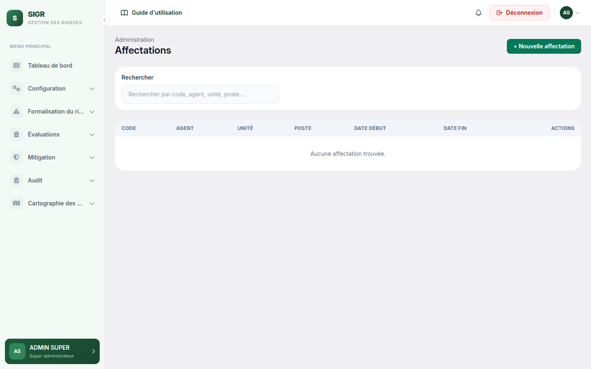
- Cliquez sur « Nouvelle affectation ».
- Sélectionnez l'agent et l'unité administrative concernés.
- Renseignez le poste occupé et la date de début (la date de fin est optionnelle).
- Enregistrez.
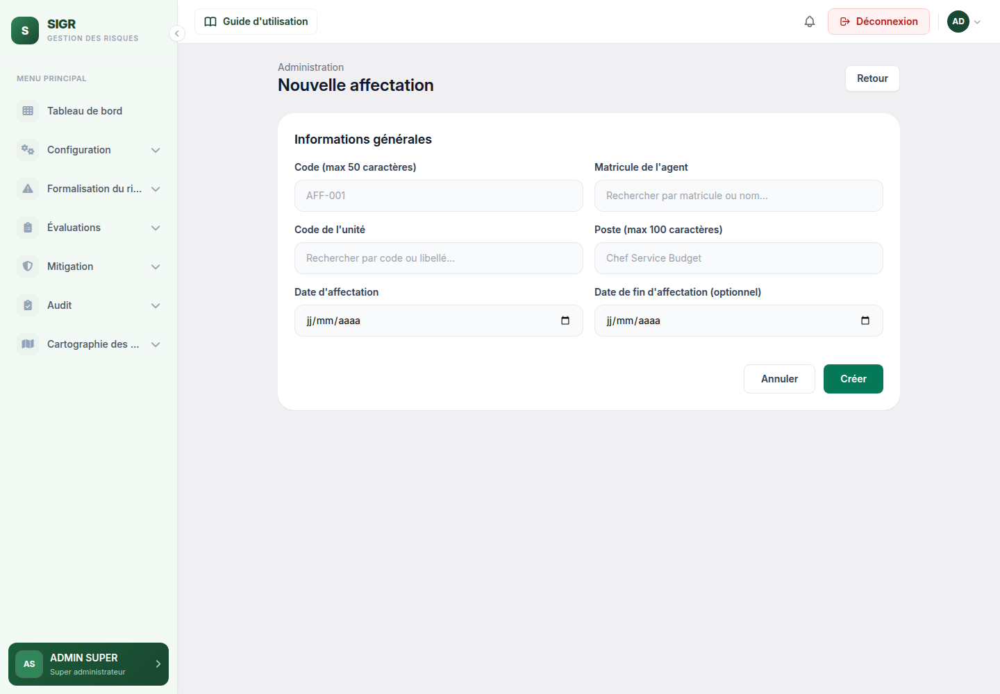
Les icônes crayon et corbeille, dans la colonne « Actions », permettent respectivement de modifier ou de supprimer une affectation existante.
Gérer les profils métier
Menu Configuration → Profils. C'est ici que sont définis les profils métier (code, libellé, description) proposés lors de la création d'un agent — voir la section Rôles & profils pour comprendre leur rôle dans le circuit de validation.
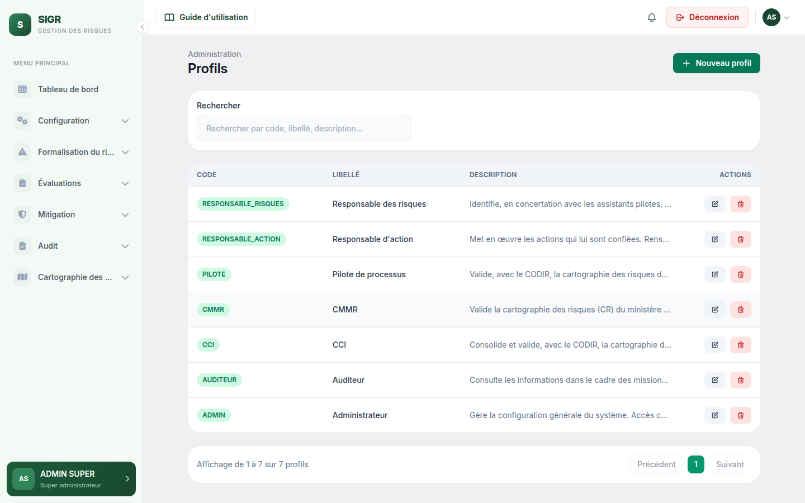
Créer un profil
- Cliquez sur « Nouveau profil ».
- Renseignez le code (identifiant technique, ex.
PILOTE), le libellé et une description. - Enregistrez.
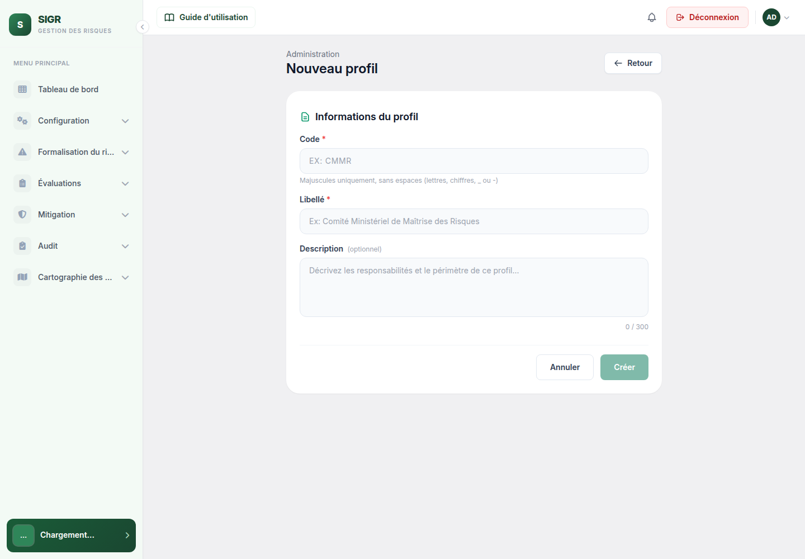
Ministères & unités administratives
Menu Configuration → Structures et Unités administratives. C'est ici que se construit l'organisation hiérarchique utilisée partout ailleurs dans l'application (processus, risques, agents…).
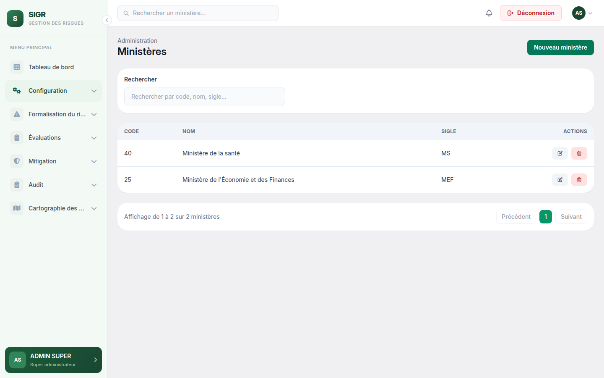
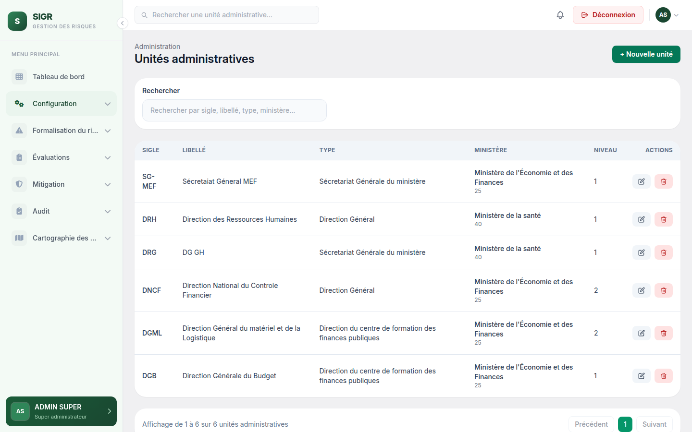
Créer un ministère
- Depuis Structures, cliquez sur « Nouveau ministère ».
- Renseignez le code, le libellé, le sigle et une description optionnelle.
- Enregistrez.
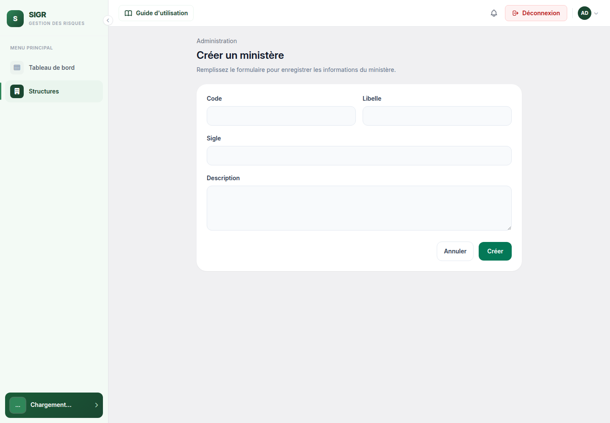
Modifier ou supprimer un ministère
Dans la colonne « Actions », l'icône crayon permet de modifier les informations du ministère (y compris son code), l'icône corbeille permet de le supprimer.
Créer une unité administrative
- Depuis Unités administratives, cliquez sur « Nouvelle unité ».
- Renseignez le sigle et le libellé, choisissez le type d'unité et le ministère de rattachement.
- Optionnel : sélectionnez une unité parent pour construire la hiérarchie — le niveau hiérarchique se calcule alors automatiquement.
- Enregistrez.
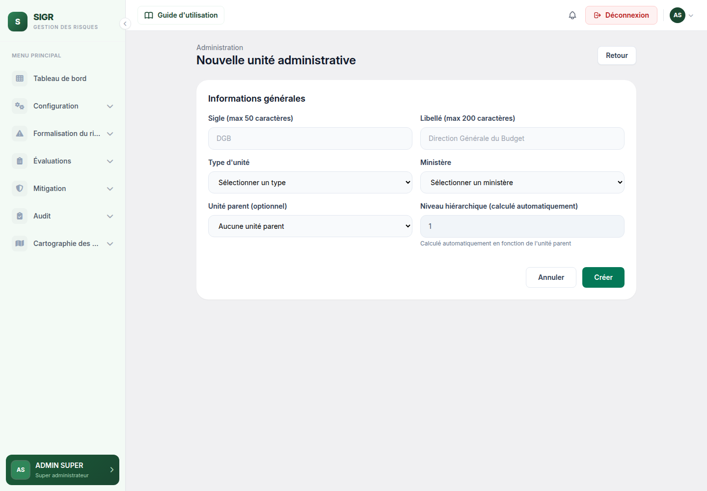
Types d'unités
Menu Configuration → Unités administratives → Types d'unités. Ces types (ex. Direction Générale, Secrétariat Général…) qualifient chaque unité administrative et sont sélectionnés lors de sa création.
- Cliquez sur « Nouveau type ».
- Renseignez le code, le libellé et une description optionnelle.
- Enregistrez.
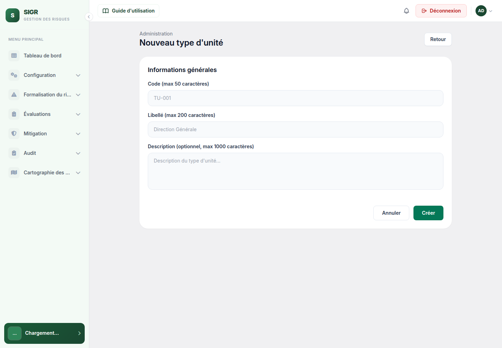
Unités de mesure
Menu Configuration → Unités de mesure. Définit les unités (numériques ou dates) utilisées pour exprimer la valeur cible et la valeur réelle des indicateurs de performance (KPI) du module Mitigation.
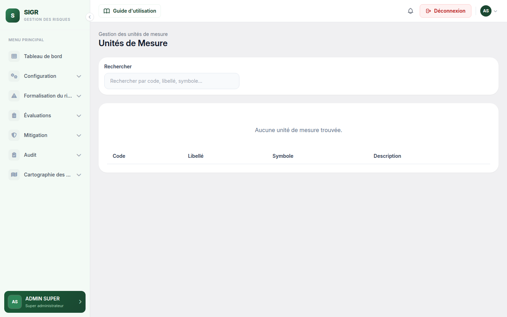
Processus & formalisation des risques
Menu Formalisation du risque inhérent. Un risque est toujours rattaché à un processus/mission métier.
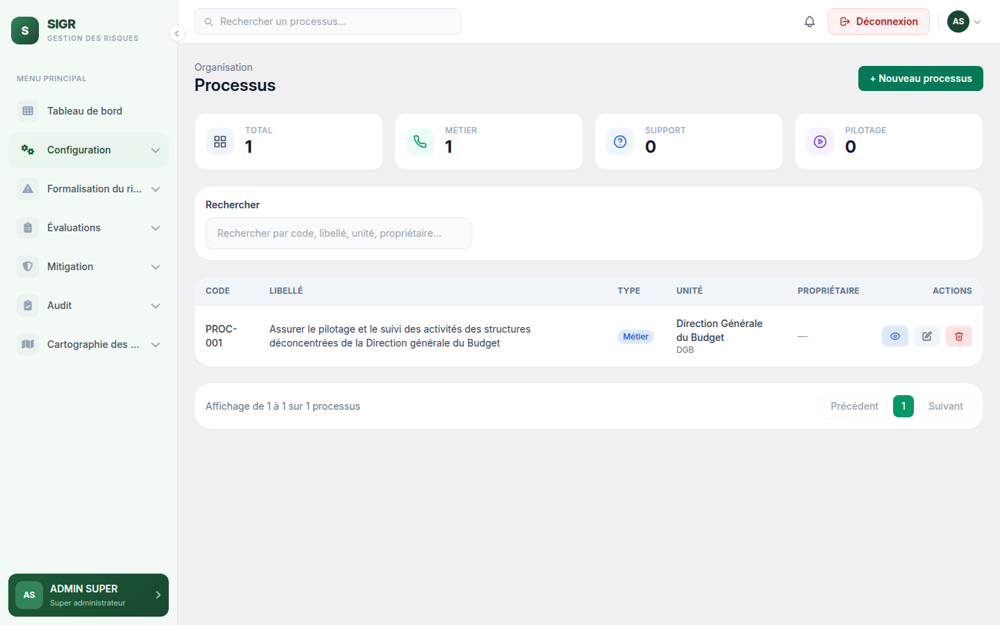
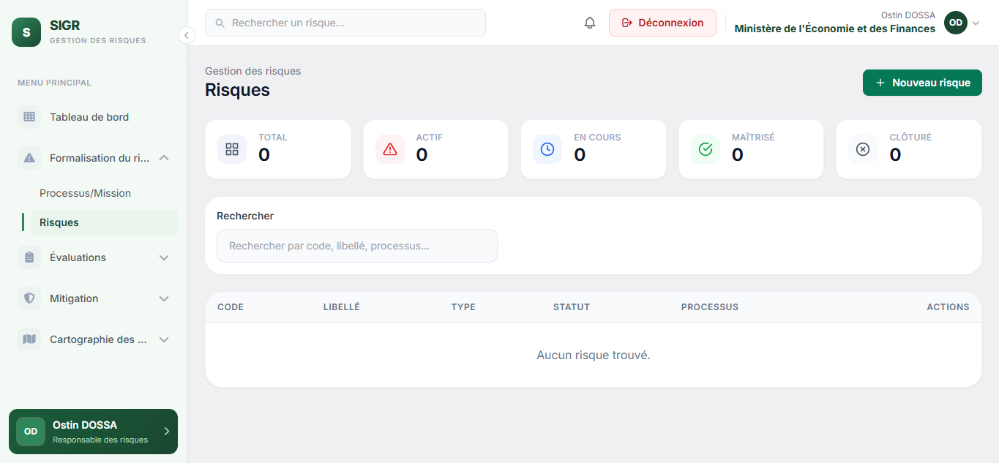
En haut de la liste des processus, des compteurs indiquent le nombre total de processus ainsi que leur répartition par type (Métier, Support, Pilotage). Le filtre « Filtrer par unité administrative » permet d'afficher uniquement les processus d'une unité donnée. Dans la colonne « Actions », trois icônes permettent de consulter (œil), modifier (crayon) ou supprimer (corbeille) un processus.
Créer un processus
- Cliquez sur « Nouveau processus ».
- Renseignez le libellé, le type de processus et l'unité administrative propriétaire.
- Ajoutez une ou plusieurs finalités (saisir puis « Ajouter ») — au moins une finalité est obligatoire.
- Un propriétaire peut être désigné parmi les managers de l'unité (optionnel).
- Enregistrez.
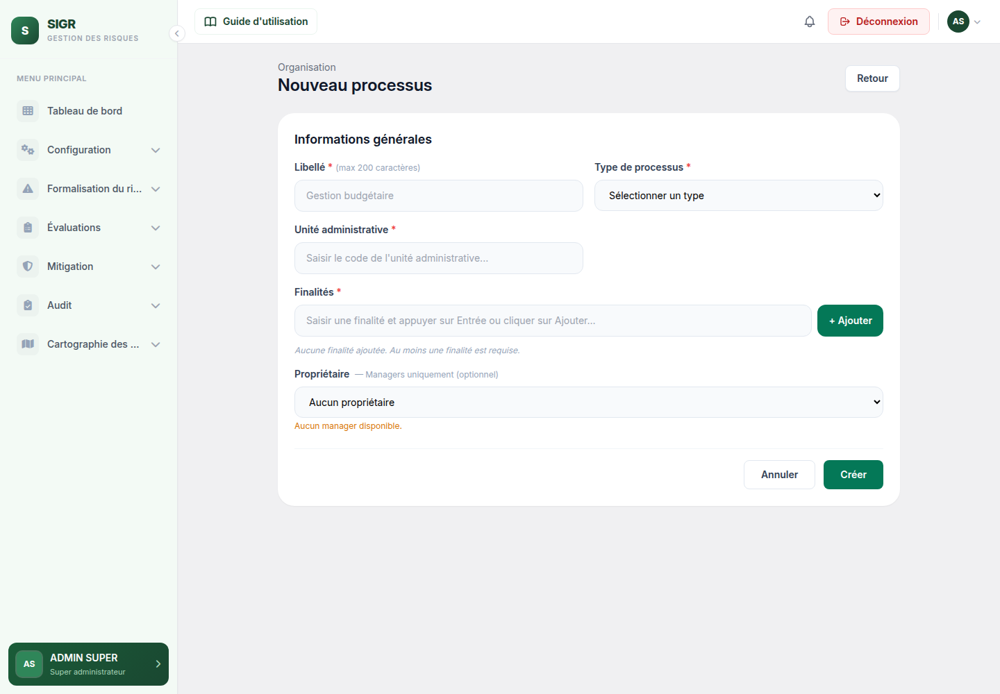
Créer un risque
- Cliquez sur « Nouveau risque ».
- Sélectionnez le processus concerné et le type de risque.
- Décrivez le risque : libellé, date d'identification, statut.
- Ajoutez au moins une cause probable, une conséquence probable et une bonne pratique (en la classant Prévention ou Protection).
- Enregistrez. Le risque part à l'étape Formalisation du circuit de validation.
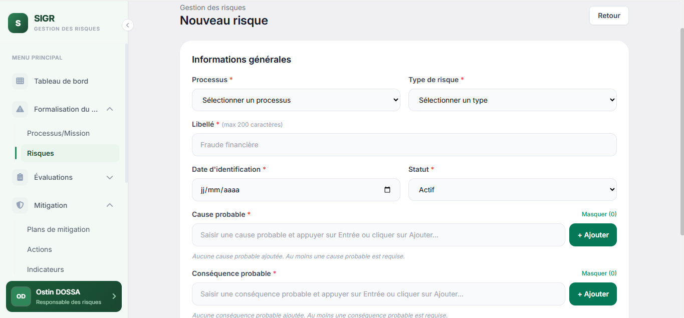
En haut de la liste des risques, des compteurs indiquent le nombre total ainsi que leur répartition par statut (Actif, En cours, Maîtrisé, Clôturé). Le filtre « Filtrer par processus » permet d'afficher uniquement les risques d'un processus donné.
Évaluer les risques
Menu Évaluations → Évaluer Risque. Chaque risque formalisé est noté (probabilité × impact) pour déterminer sa criticité, visible ensuite sous forme de matrice.
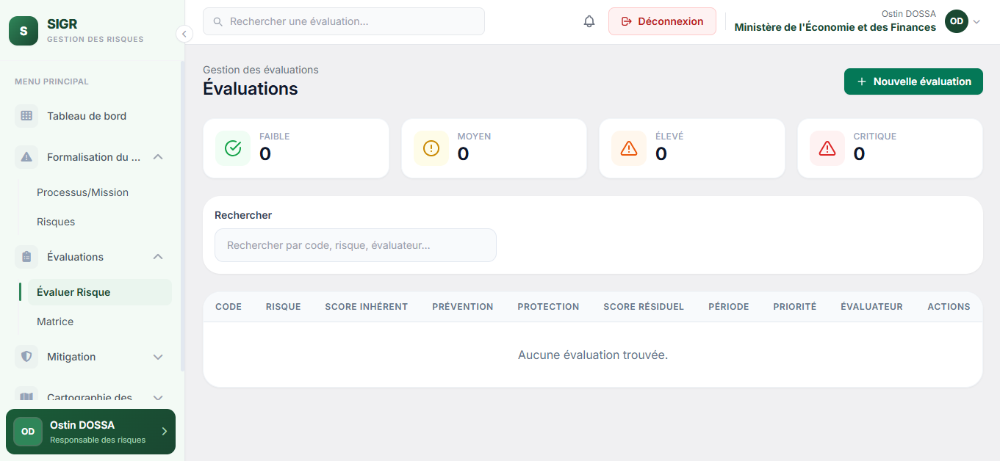
En haut de la page, des compteurs indiquent le nombre d'évaluations par niveau de criticité : Faible, Moyen, Élevé, Critique.
Créer une évaluation
| Échelle | Valeurs | Classement du score inhérent (impact × probabilité) |
|---|---|---|
| Impact / Probabilité | 1 (très faible) à 5 (très élevé) | Faible : 1-7 · Moyen : 8-14 · Élevé : 15-25 |
| Protection / Prévention | 0 (aucun) à 3 (élevé) |
- Sélectionnez le risque à évaluer et, si besoin, l'agent évaluateur (optionnel).
- Renseignez la période d'évaluation (date de début et de fin, toutes deux optionnelles).
- Renseignez l'impact et la probabilité inhérents (échelle 1 à 5).
- Décrivez les bonnes pratiques existantes et manquantes, et cochez si le risque est déjà survenu.
- Ajoutez, si nécessaire, une recommandation (1000 caractères maximum).
- Enregistrez.
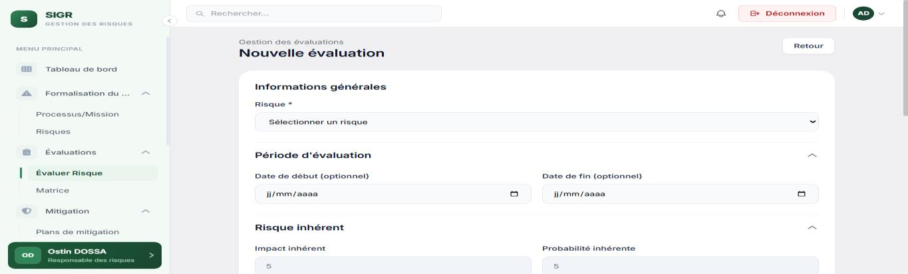
(nombre de bonnes pratiques sélectionnées du type × 3) / nombre total de bonnes pratiques de ce type.Matrice des risques
Menu Évaluations → Matrice. Vue croisée probabilité × impact de tous les risques évalués : chaque case affiche un score et se colore selon la criticité (faible, moyen, élevé). Cliquez sur une case pour voir le détail des risques qu'elle contient.
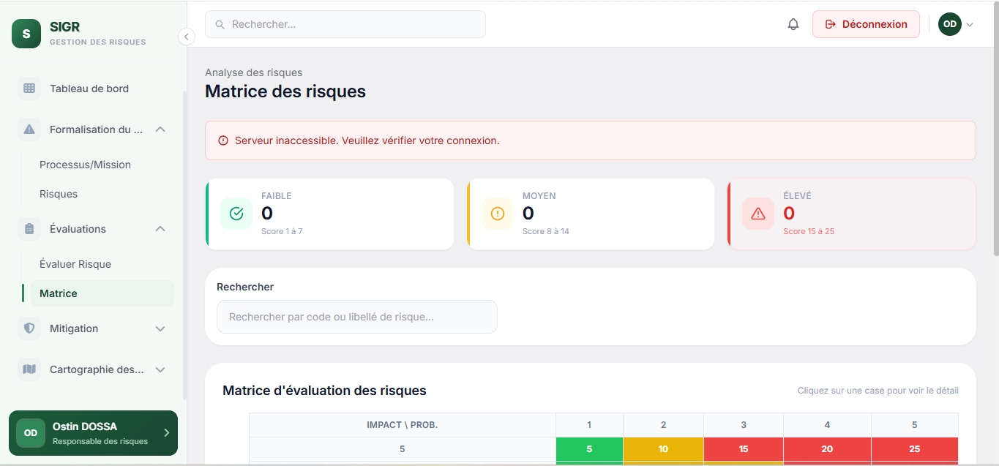
Mitigation : plans, actions, indicateurs
Menu Mitigation. Un plan de mitigation regroupe des actions correctives, suivies par des indicateurs de performance (KPI).
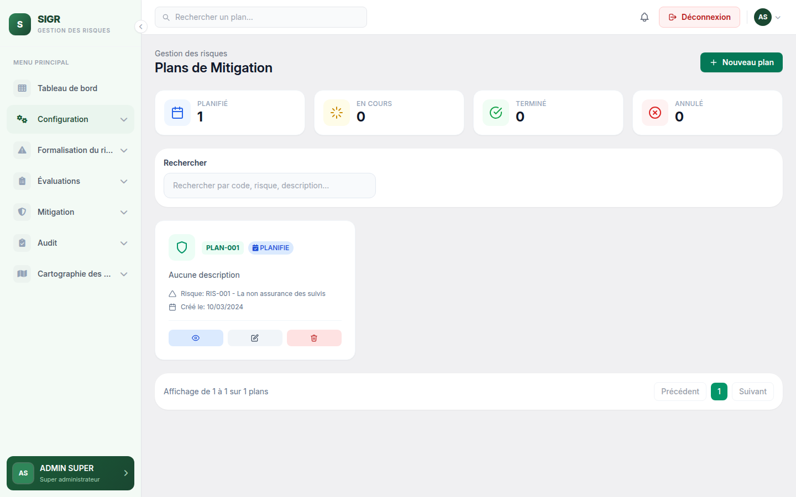
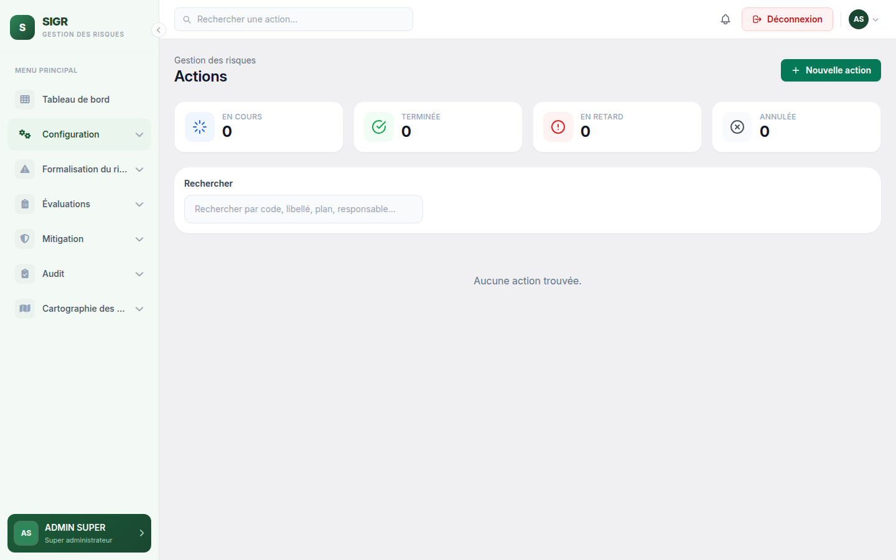
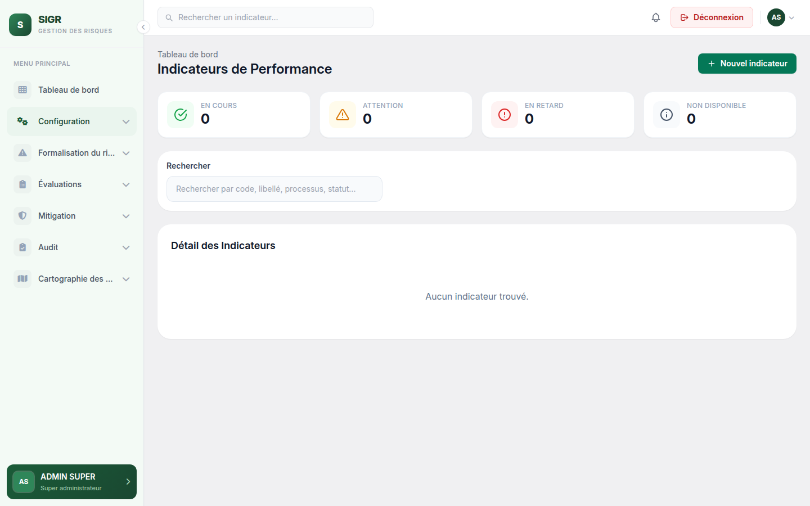
Créer un plan de mitigation
Des compteurs, en haut de la liste, indiquent le nombre de plans selon leur statut : Planifié, En cours, Terminé, Annulé.
- Depuis Plans de mitigation, cliquez sur « Nouveau plan ».
- Renseignez le libellé, le statut, le risque associé et une description.
- Enregistrez.
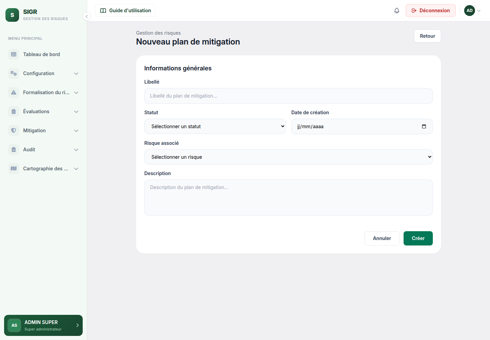
Créer une action
Le filtre « Filtrer par plan de mitigation » affiche uniquement les actions d'un plan donné. Des compteurs indiquent le nombre d'actions par statut : En cours, Terminée, En retard, Annulée.
- Depuis Actions, cliquez sur « Nouvelle action ».
- Sélectionnez le plan de mitigation, le risque associé et, si pertinent, la bonne pratique visée.
- Ajoutez un ou plusieurs libellés d'actions — au moins un est obligatoire.
- Sélectionnez un statut, renseignez les dates de début/fin et choisissez un responsable.
- Enregistrez.
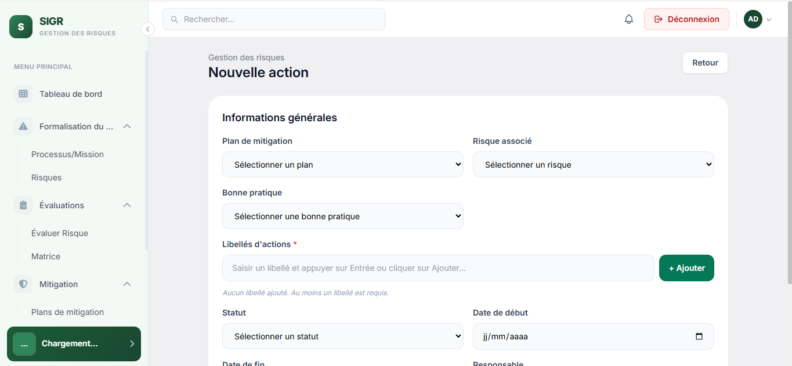
Le tableau de bord des indicateurs
La page Indicateurs combine une liste de gestion et un véritable tableau de bord de suivi. En haut, des compteurs indiquent le nombre d'indicateurs par statut : En cours, Attention, En retard, Non disponible. Trois graphiques complètent la vue : « Vue d'ensemble » (valeurs obtenues vs cibles), « Répartition par Statut » (proportion d'indicateurs par statut) et « Taux d'Atteinte par Indicateur » (performance relative par rapport à la cible).
La section « Détail des Indicateurs » liste chaque indicateur avec son code, son libellé, le plan de mitigation associé, le processus concerné, sa fréquence de suivi (annuelle, trimestrielle…), son écart par rapport à la cible, son seuil et son taux d'atteinte représenté sous forme de jauge circulaire.
Créer un indicateur de performance
- Depuis Indicateurs, cliquez sur « Nouvel indicateur ».
- Renseignez le libellé et la fréquence de suivi.
- Rattachez-le à un processus, un risque, un plan de mitigation et/ou une action.
- Choisissez une unité de mesure, définissez les dates, le seuil d'alerte, la valeur cible et la valeur obtenue.
- Enregistrez.
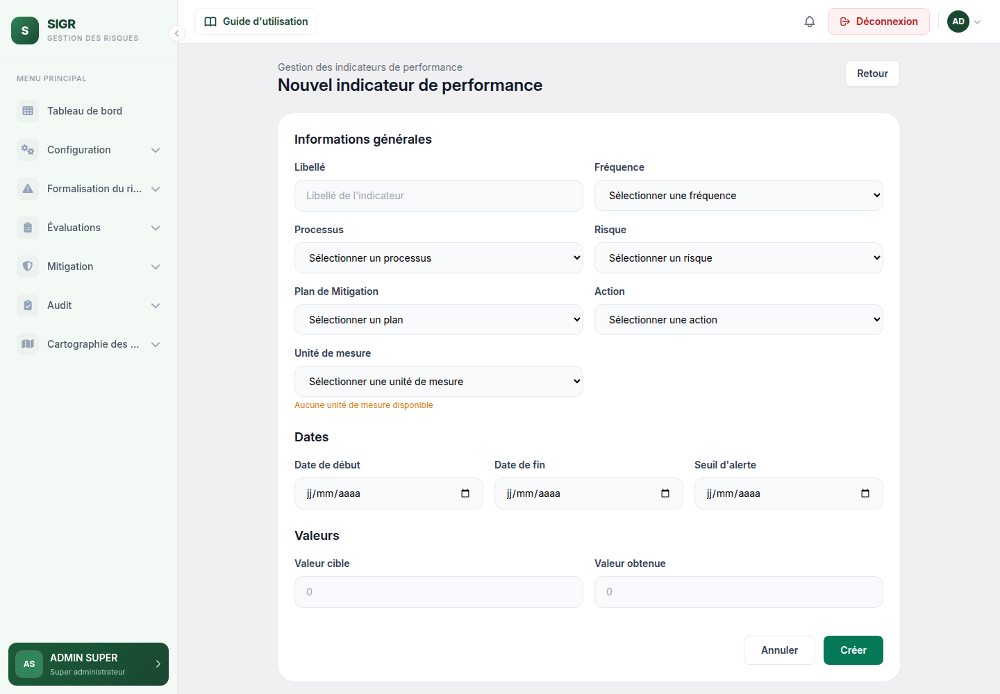
Cartographie des risques & circuit de validation
Menu Cartographie des risques. C'est le cœur du dispositif : chaque risque formalisé suit un circuit de validation à quatre étapes avant de devenir définitif.
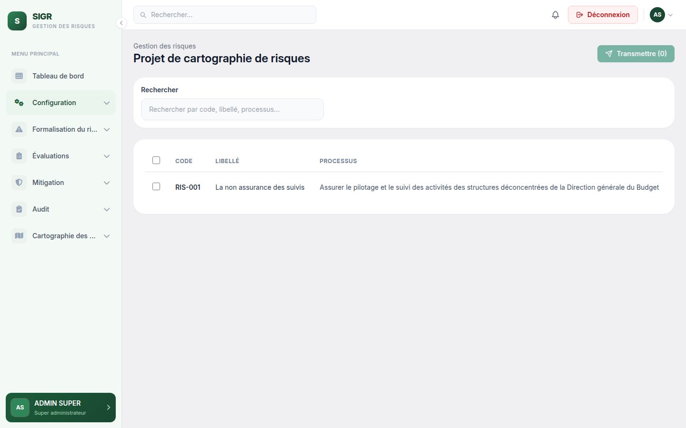
Transmettre un risque
- Cochez un ou plusieurs risques dans la liste.
- Cliquez sur « Transmettre » : le dossier avance à l'étape Pilote.
Valider, différer ou rejeter
- Valider fait avancer le dossier à l'étape suivante du circuit.
- Différer renvoie le dossier à l'étape précédente — un motif est obligatoire.
- Rejeter clôture définitivement le dossier — un motif est obligatoire.
Retrouver les dossiers selon leur statut
Trois vues complémentaires permettent de suivre les dossiers transmis dans le circuit :
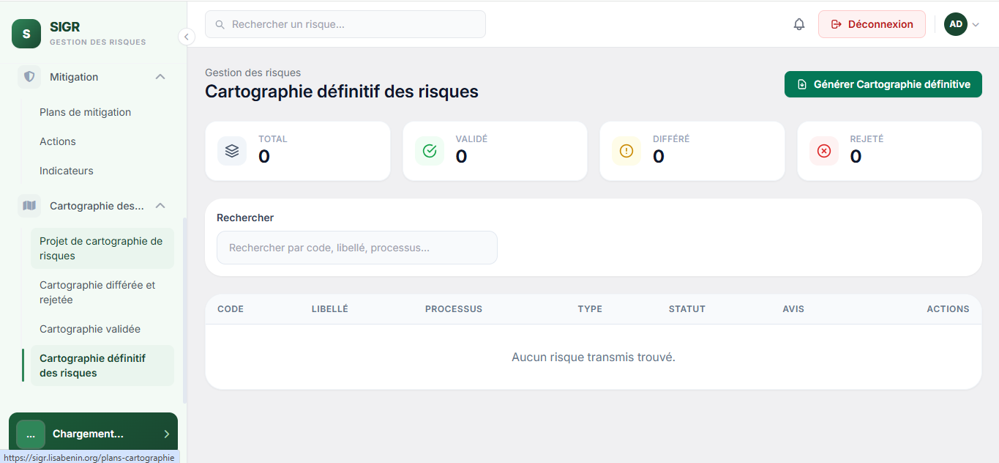
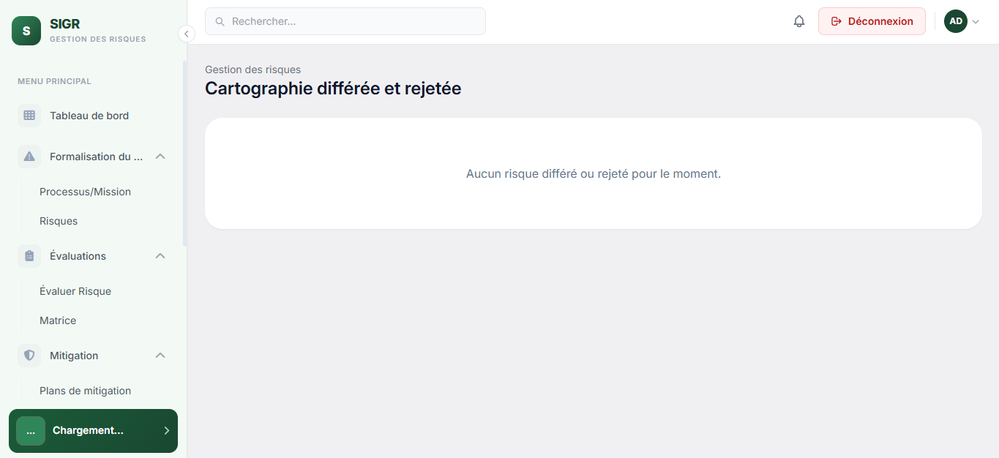
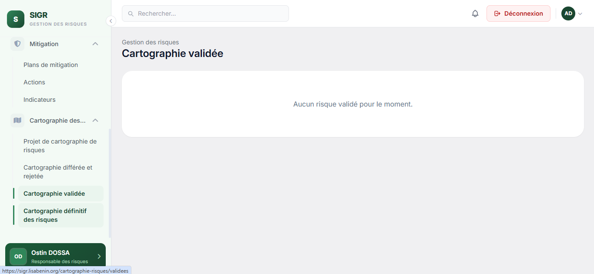
Sur la page « Cartographie définitif des risques », des compteurs indiquent le nombre total de risques ainsi que leur répartition selon l'avis rendu : Validé, Différé, Rejeté. Le bouton « voir détails » ouvre la fiche complète d'un risque, et le bouton « Cartographie définitive », en haut à droite, permet de générer le document final de la cartographie.
Plan d'audit
Menu Audit → Plan d'audit. Planifiez et suivez les missions d'audit rattachées à un processus ou un risque.
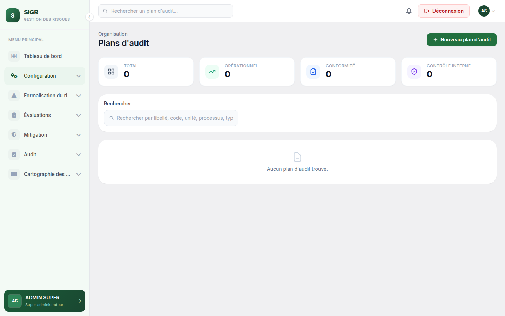
Des compteurs indiquent le nombre total de plans d'audit ainsi que leur répartition par type (Opérationnel, Conformité, Contrôle interne). Les filtres « Recherche », « Unité administrative » et « Audit proposé » permettent d'affiner la liste.
Créer un plan d'audit
- Cliquez sur « Nouveau plan d'audit ».
- Renseignez le libellé, la date de création et l'unité administrative concernée.
- Dans la pré-planification, choisissez le processus puis, si besoin, le risque inhérent associé.
- Précisez le type d'audit proposé, le type de revue, l'objectif et l'effort d'audit indicatif.
- Enregistrez.
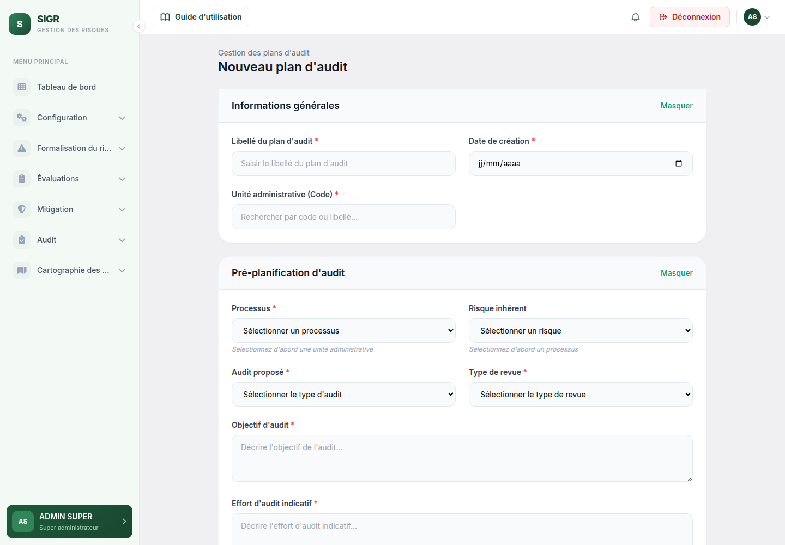
Centre de notifications
Menu Alertes (visible dans le menu principal) ou icône cloche dans la barre supérieure. Contrairement à une liste d'alertes générale, chaque notification est personnelle : elle vous est adressée spécifiquement parce que votre rôle/profil et votre étape dans le circuit de validation la concernent.
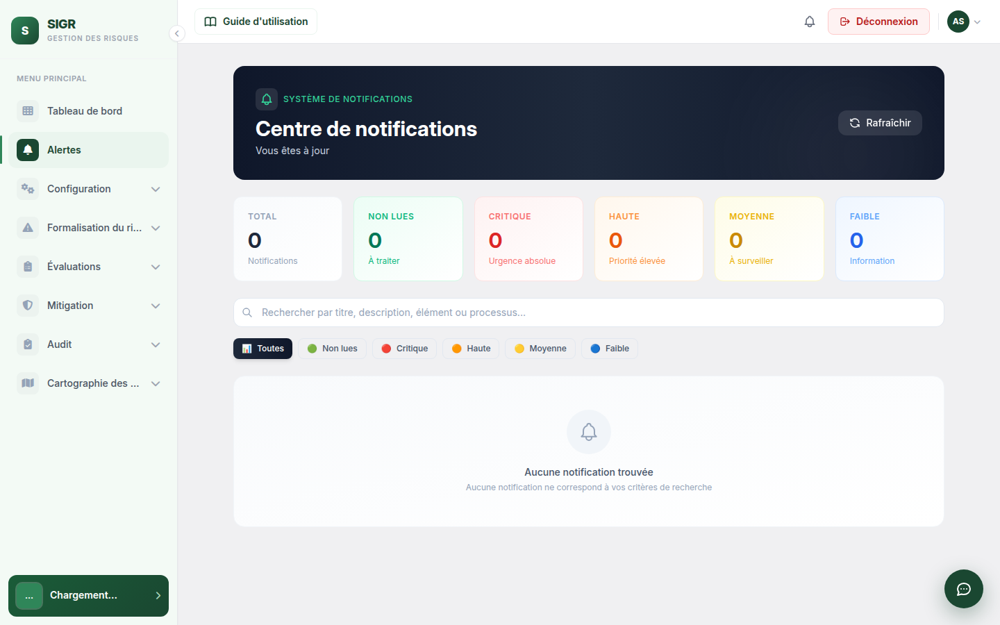
Comment une notification vous est adressée
Une tâche planifiée analyse la plateforme toutes les heures et crée une notification pour chaque agent concerné par une situation à traiter :
| Situation détectée | Sévérité | Destinataire(s) |
|---|---|---|
| Risque sans plan de mitigation | Critique | Responsable des risques + Responsable d'action du ministère |
| Risque avec plan mais sans action en cours | Haute | Responsable d'action du ministère |
| Seuil d'alerte d'un indicateur dépassé | Haute | Responsable d'action du ministère |
| Échéance d'action proche (≤ 7 jours) | Moyenne | Responsable d'action du ministère |
| Risque en attente de votre décision | Moyenne | Le profil correspondant à l'étape (Pilote, CCI ou CMMR) |
Filtrer et rechercher
- Les cartes en haut de page (Total, Non lues, Critique, Haute, Moyenne, Faible) filtrent la liste en un clic.
- La barre de recherche filtre par titre, description, élément ou processus concerné.
- Une notification non lue affiche un badge « Nouveau » et reste mise en avant visuellement.
Consulter et marquer comme lu
- Cliquez sur une notification pour ouvrir son détail : elle est automatiquement marquée comme lue à l'ouverture.
- Le détail propose un lien direct « Ouvrir l'élément concerné » vers le risque ou l'indicateur en cause.
- Le bouton « Tout marquer comme lu » (visible s'il reste des notifications non lues) traite la liste entière en un clic.
Mon profil
Cliquez sur votre avatar (haut droite) pour consulter vos informations : matricule, rôle, profil métier, ministère et unité de rattachement.
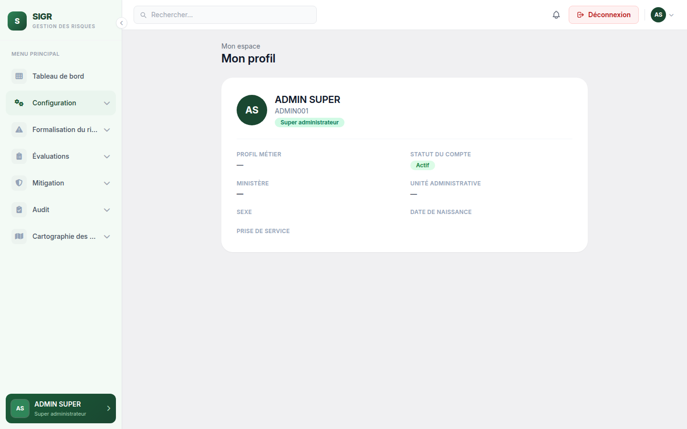
Questions fréquentes
Un bouton est grisé, pourquoi ?
Votre rôle ou profil métier ne dispose pas des droits nécessaires pour cette action. Ce n'est pas une erreur : c'est le contrôle d'accès qui protège les données.
Je ne vois pas les données d'un autre ministère, est-ce normal ?
Oui. Sauf pour un SUPER_ADMIN, chaque compte est cloisonné à son ministère par sécurité.
J'ai différé un risque par erreur, que faire ?
Le dossier revient à l'étape précédente du circuit. La personne responsable de cette étape peut le re-transmettre normalement.
Comment obtenir un compte ?
Seul un agent ADMIN (de votre ministère) ou le SUPER_ADMIN peut créer votre compte, depuis Configuration → Agents.
Je ne reçois pas mes notifications par email
Vérifiez qu'une adresse email est renseignée sur votre fiche agent (Configuration → Agents). Sans email, vous restez notifié normalement en in-app, seul le canal email est indisponible.
Une notification a disparu de ma liste ?
Aucune notification n'est supprimée automatiquement. Vérifiez vos filtres (« Non lues », sévérité) ou la barre de recherche : la notification est probablement simplement masquée par un filtre actif.